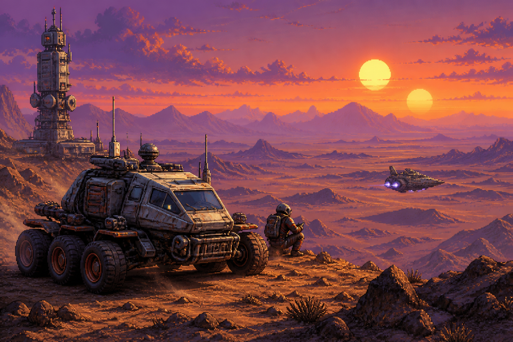

TURN PROMPTS
INTO PIXELS.
一个稳定、可审查、不会擅自重复计费的 GPT-Image 命令行工具。支持 CC-Switch，也支持任意 OpenAI 兼容中转站。
> gpt-image generate
"霓虹雨夜的 8-bit 城市"
--size landscape --quality high
✓ IMAGE VALIDATED / SAVED01 ONE-LINE SETUP
复制一句话，交给 Codex。
请从 https://github.com/Lijinzh/gpt-image-2-cli 安装并配置 gpt-image-2-cli，优先读取我本机当前的 CC-Switch Codex 供应商；先运行 gpt-image doctor 和一次不计费的 --dry-run，禁止打印、复制或保存 API Key；如果没有 CC-Switch，就指导我在本机设置 GPT_IMAGE_API_BASE 和 GPT_IMAGE_API_KEY，不要让我在聊天中粘贴 Key；验证成功后告诉我安装位置和一条可直接生成图片的命令。
提示词只会写入剪贴板；真实 API Key 始终留在使用者自己的电脑上。
02 QUICK START
四步进入生成循环
-
01INSTALL
用 uv 从 GitHub 安装 CLI。
uv tool install "git+https://github.com/Lijinzh/gpt-image-2-cli.git" -
02DOCTOR
只读检查当前供应商、模型与网络配置。
gpt-image doctor -
03DRY RUN
先预览请求，不生成图片，也不产生模型费用。
gpt-image generate "..." --dry-run -
04GENERATE
确认参数后生成，并校验格式与真实像素尺寸。
gpt-image generate "..." -o result.png
PLAY COMMAND LAB
先把命令拼好，再复制。
选择提示词、画幅和质量，页面会实时生成一条可执行命令。这里不会连接 API，也不会读取任何密钥。
03 IMAGE GALLERY
八部电影，八种像素叙事。
使用左右大按钮、键盘方向键或触摸滑动浏览场景。每张图都配有完整测试提示词，可一键送入上面的命令实验台。

← → 键盘切换 · 触摸左右滑动
双日落 · 星球大战灵感
双日、沙丘、原创勘探车与远景飞船构成太空歌剧画面，适合测试大气分层、逆光轮廓和机械材质。
An original retro space-opera landscape on a vast alien desert ridge beneath two setting suns, with a rugged six-wheeled survey rover, tall communications mast and tiny cargo spacecraft far away. Premium high-density 1990s arcade pixel art, 32-bit Neo Geo-era visual richness, hand-authored pixel clusters, layered dunes and atmospheric perspective, cinematic orange-violet rim light, realistic weathered metal and sand textures, crisp silhouettes, wide establishing shot, no text, no logo, no watermark, not a film screenshot, not vector art, not minimalist, no smooth digital painting, entirely original vehicle designs.
非官方像素艺术致敬示例；不含官方 Logo、电影截图或演员肖像。8 张大图均由本仓库 CLI 调用 gpt-image-2 生成。
04 BUILT FOR THE LONG RUN
大图慢一点，也要把结果安全带回来。
- 30 MIN
- 大图请求的默认等待窗口，并持续输出心跳。
- NO RETRY
- 读超时或断线后不自动重投，降低重复计费风险。
- ATOMIC SAVE
- 先校验图片，再原子写入目标文件。
RESPONSE CHECK
- Base64 JSON
- Base64 data URI
- HTTP(S) image URL
- Direct image response
- Simple SSE response
- Actual pixel-size validation
05 API KEY SAFETY
仓库公开，密钥仍然留在本机。
CLI 只读访问当前用户的 CC-Switch 配置，或者从环境变量获取凭据。它没有 --api-key 参数，不会把 Key 写入图片、请求元数据或公开日志。
- 不打印 Bearer Token 与真实 API Key
- 不提交
.env、生成结果与请求元数据 - 不共享 每位合作伙伴使用自己的供应商与密钥
06 USER FEEDBACK
遇到问题，直接在这里告诉我。
不熟悉 GitHub 也没关系：在网页里写好问题，系统会自动整理成 Issue 标题和正文，再带你到 GitHub 做最后确认。
为什么还要确认一次？ 网站不会保存 GitHub Token，也不会代替用户公开发布内容。这样可以避免仓库权限泄露和匿名垃圾 Issue。
READY PLAYER?